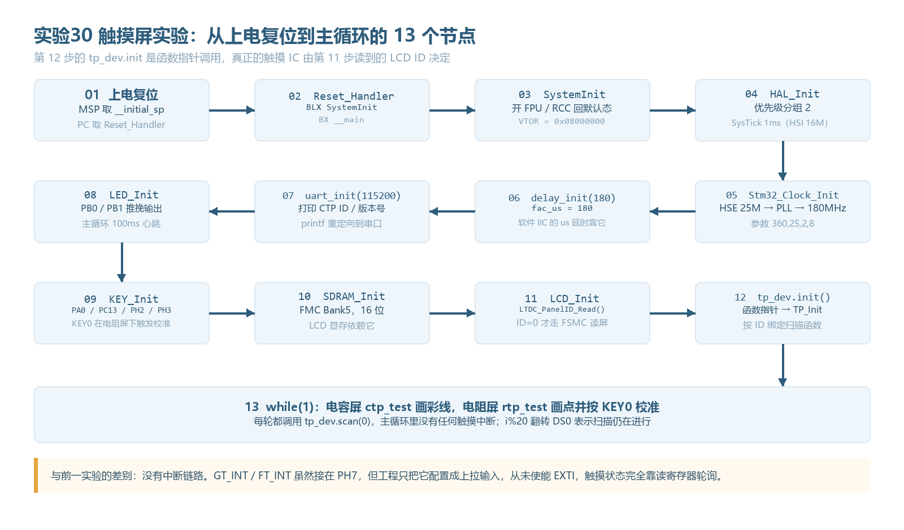
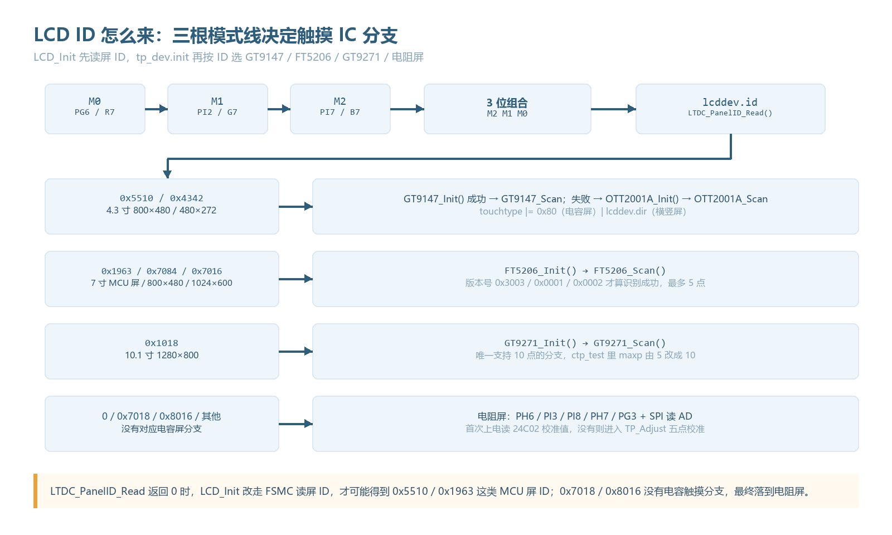
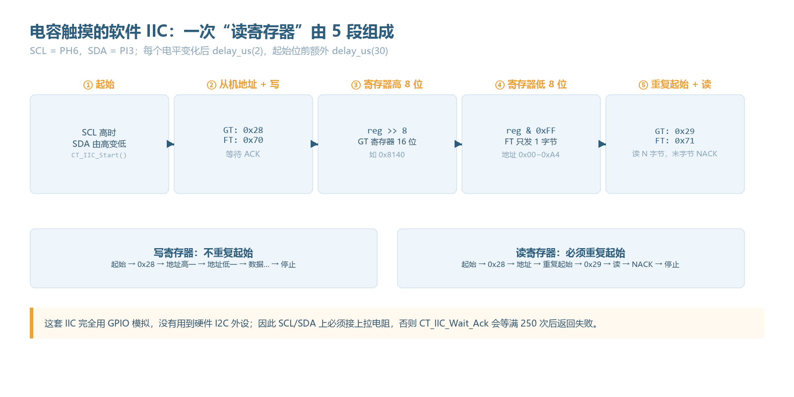
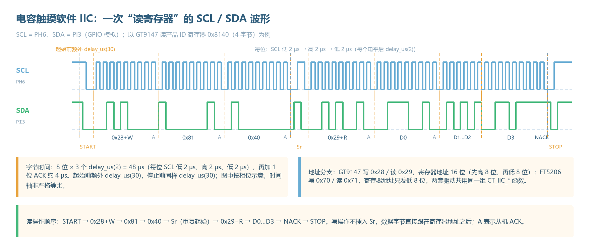
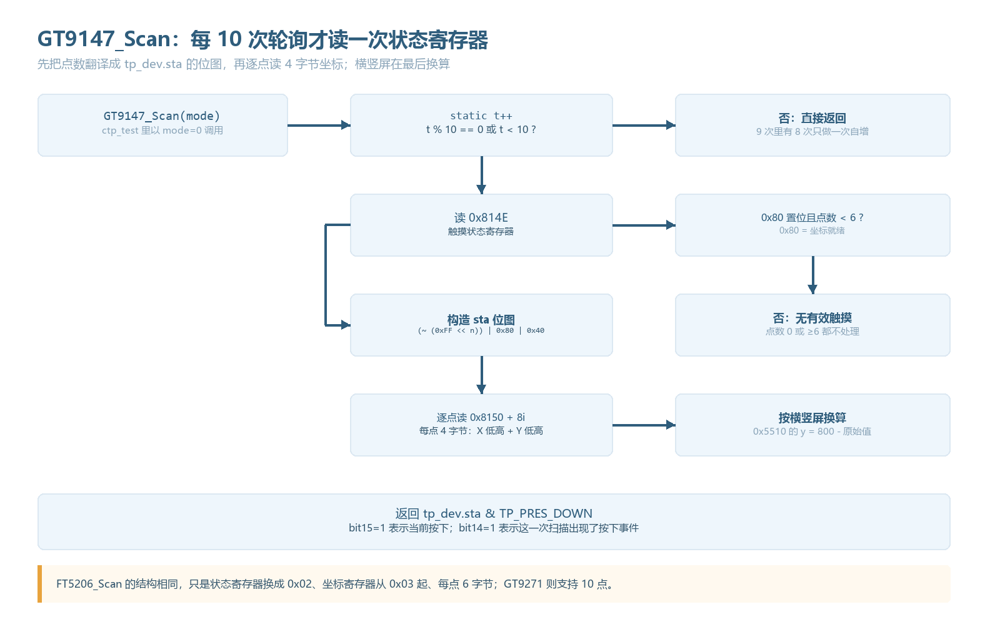
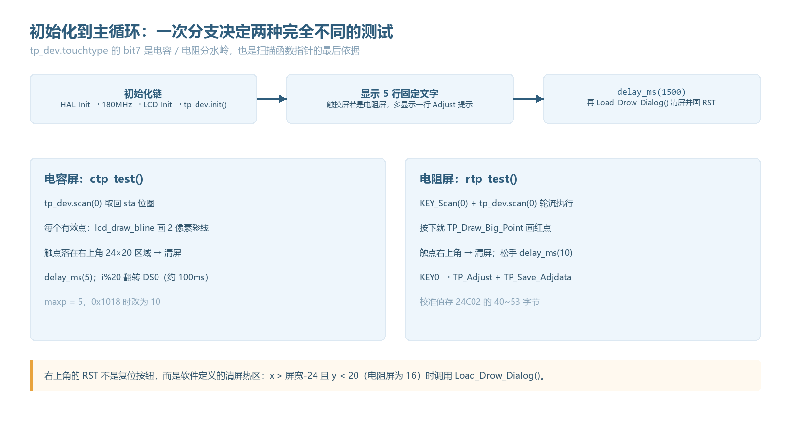

01 实验目标与硬件资源
触摸屏实验是这一组实验里分支最多的一课：同一个 main.c 要同时支持 4.3 寸、7 寸、10.1 寸电容屏和电阻屏。真正的“选择”发生在两处——LCD_Init 读出 lcddev.id，TP_Init 再按这个 ID 把 tp_dev.scan 指向不同的驱动函数。理解这条函数指针链，就理解了本实验的启动逻辑。
| 资源 | 引脚 / 参数 | 关键配置 | 源码证据 |
|---|---|---|---|
| 电容触摸 IIC | SCL=PH6、SDA=PI3 | GPIO 模拟，delay_us(2) | HARDWARE/TOUCH/ctiic.c |
| 触摸复位 / 中断 | RST=PI8、INT=PH7 | RST 推挽输出，INT 仅输入 | gt9147.c · GT9147_Init |
| GT9147 / GT9271 | 写 0x28 / 读 0x29 | 寄存器 16 位，ID 在 0x8140 | gt9147.h |
| FT5206 | 写 0x70 / 读 0x71 | 状态 0x02，坐标从 0x03 起 | ft5206.h |
| LCD 屏型 | PG6 / PI2 / PI7 | 三根模式线组合成面板 ID | ltdc.c · LTDC_PanelID_Read |
| 电阻屏 | PH6 / PI3 / PI8 / PH7 / PG3 | SPI 读 AD，坐标需校准 | touch.c · TP_Init 的 else 分支 |
| 校准存储 | 24C02，地址 40 起 14 字节 | 标记字 0x0A 表示已校准 | touch.c · SAVE_ADDR_BASE |
| 显示 / 按键 | LCD、KEY0、DS0 | 清屏热区、校准触发、心跳 | USER/main.c |
GT_INT / FT_INT 只被配置成 PH7 输入，也没有调用 HAL_GPIO_EXTI 或 NVIC 使能；触摸状态完全靠 tp_dev.scan(0) 轮询寄存器。02 目录与文件分工
| 目录 / 文件 | 负责什么 | 本页看什么 |
|---|---|---|
CORE/startup_stm32f429xx.s | 栈堆、向量表、复位入口 | 没有任何触摸中断向量被使用 |
USER/system_stm32f4xx.c | FPU、RCC 复位、VTOR | SystemInit |
USER/main.c | 初始化、测试分支、主循环 | tp_dev.init()、ctp_test/rtp_test |
USER/stm32f4xx_it.c | 异常入口 | 仍只有 SysTick_Handler |
HARDWARE/LCD/lcd.c | LCD 初始化、ID 判定 | lcddev.id、lcddev.dir |
HARDWARE/LCD/ltdc.c | RGB 屏 ID 读取与 LTDC 配置 | LTDC_PanelID_Read |
HARDWARE/TOUCH/touch.c | 触摸总入口、校准、参数存取 | TP_Init、TP_Adjust |
HARDWARE/TOUCH/ctiic.c | 电容屏专用软件 IIC | CT_IIC_Start、CT_IIC_Send_Byte |
HARDWARE/TOUCH/gt9147.c、ft5206.c | 两颗电容 IC 的寄存器读写与扫描 | GT9147_Scan、FT5206_Scan |
HARDWARE/24CXX/24cxx.c | EEPROM 读写（复用软件 IIC） | AT24CXX_ReadOneByte |
SYSTEM/{sys,delay,usart} | 时钟、us 延时、调试串口 | 软件 IIC 的节拍来源 |
myiic.c（PH4/PH5，给 24C02 用）和 ctiic.c（PH6/PI3，给电容屏用）。它们互不复用，初始化时机也不同。03 启动流程总览

main 的调用顺序是：HAL_Init → Stm32_Clock_Init → delay_init → uart_init → LED_Init → KEY_Init → SDRAM_Init → LCD_Init → tp_dev.init()。其中 tp_dev.init 是一个函数指针，在 touch.c 里被赋值为 TP_Init。
- RGB 屏的显存放在 SDRAM，
LCD_Init会通过 LTDC 把帧缓存地址指过去；SDRAM 没初始化就点屏，屏幕不会亮。 TP_Init的第一行判断就是lcddev.id，这个值由LCD_Init写入；顺序反了只能读到 0，从而错误地落到电阻屏分支。- 电阻屏分支还会调用
LCD_Clear与TP_Adjust画校准十字，这些都需要 LCD 已经可用。
04 启动文件与向量表
Stack_Size EQU 0x400; //1KB 栈 Heap_Size EQU 0x200; //512B 堆 DCD Reset_Handler ; Reset Handler DCD NMI_Handler ; NMI Handler DCD HardFault_Handler ; Hard Fault Handler ... DCD EXTI9_5_IRQHandler ; EXTI Line 9..5 //本实验未使用 Reset_Handler PROC EXPORT Reset_Handler [WEAK] IMPORT SystemInit IMPORT __main LDR R0, =SystemInit BLX R0 //先跑 SystemInit LDR R0, =__main BX R0 //再进 C 库初始化，最终到 main ENDP
PH7 作为触摸 INT 引脚，硬件上可以产生 EXTI7 中断，但本工程从未配置它：没有 HAL_NVIC_EnableIRQ，也没有 stm32f4xx_it.c 里的 EXTI9_5_IRQHandler 实现，因此向量表里这一项始终指向默认死循环。
GT9147_Init把 PH7 配成上拉输入，读完 ID 后又改成浮空输入，全程只当普通 IO 用。- 触摸是否发生由
GT9147_Scan读 0x814E 状态寄存器判断，与 INT 引脚电平无关。 - 因此即使把 INT 脚悬空，扫描照样工作；反过来，只接 INT 不轮询寄存器则什么也读不到。
05 SystemInit 与 HAL_Init
void SystemInit(void)
{
RCC->CR |= (uint32_t)0x00000001; //开 HSI
RCC->CFGR &= 0xF8FF0000; //复位 SW / HPRE / PPRE1 / PPRE2
RCC->CR &= 0xFEF6FFFF; //关 HSE / CSS / PLL
RCC->CR &= 0xFFFBFFFF; //关 PLLI2S
RCC->BDCR &= 0xFFFFFF80; //复位 RTC 时钟源
SCB->VTOR = FLASH_BASE; //向量表指向 0x08000000
}
HAL_StatusTypeDef HAL_Init(void)
{
HAL_NVIC_SetPriorityGrouping(NVIC_PRIORITYGROUP_2); //分组 2
HAL_InitTick(TICK_INT_PRIORITY); //TICK_INT_PRIORITY = 0x0F
return HAL_OK;
}
HAL_InitTick在 HSI 16MHz 下把重装值设为 16000；随后主频改到 180MHz，SysTick 未重配，HAL_Delay会明显偏慢。delay_us/delay_ms是SYSTEM/delay的轮询实现，fac_us = 180，与本实验的软件 IIC 节拍直接相关。- 触摸驱动只用
delay_us/delay_ms，不用HAL_Delay，所以 IIC 时序不会因 SysTick 偏差而变形。
06 时钟、延时与显示前置
Stm32_Clock_Init(360,25,2,8); //SYSCLK=180M, PCLK1=45M, PCLK2=90M delay_init(180); //fac_us = 180 LED_Init(); //PB0 / PB1 KEY_Init(); //PA0 / PC13 / PH2 / PH3 SDRAM_Init(); //FMC Bank5，RGB 屏显存 LCD_Init(); //先读面板 ID，再选 LTDC 或 FSMC tp_dev.init(); //函数指针 → TP_Init
| 延时 | 实现 | 在本实验中的用途 |
|---|---|---|
delay_us(2) | 轮询 DWT 计数 | 软件 IIC 每个电平变化后的间隔 |
delay_us(30) | 轮询 | IIC 起始 / 停止信号的保持时间 |
delay_ms(10) | 轮询 | GT9147 复位脉冲宽度 |
delay_ms(5) | 轮询 | ctp_test 每帧之间的间隔 |
delay_ms(1500) | 轮询 | 显示完开机文字后等待，再清屏 |
- SCL 的高低电平靠
CT_Delay()（内部delay_us(2)）拉开；延时太短，GT9147 可能采样不到。 - 延时由
fac_us决定，delay_init(180)必须与真实主频一致；若主频改了却忘了改这个参数，IIC 会整体变慢或变快。 - 软件 IIC 不占硬件外设，任何 GPIO 都能改，这是阿波罗板用 PH6/PI3 的原因。
07 LCD ID 读取与屏型判定

u16 LTDC_PanelID_Read(void)
{
u8 idx=0;
...
idx=(u8)HAL_GPIO_ReadPin(GPIOG,GPIO_PIN_6); //M0
idx|=(u8)HAL_GPIO_ReadPin(GPIOI,GPIO_PIN_2)<<1; //M1
idx|=(u8)HAL_GPIO_ReadPin(GPIOI,GPIO_PIN_7)<<2; //M2
switch(idx)
{
case 0:return 0X4342; //4.3 寸 480×272
case 1:return 0X7084; //7 寸 800×480
case 2:return 0X7016; //7 寸 1024×600
case 3:return 0X7018; //7 寸 1280×800
case 4:return 0X8016; //8 寸 1024×600
case 5:return 0X1018; //10.1 寸 1280×800
default:return 0;
}
}
LCD_Init 的处理是：lcddev.id = LTDC_PanelID_Read()，若结果非 0 就走 LTDC_Init（RGB 屏）；若为 0 则走 FSMC 总线读 MCU 屏 ID，这才可能出现 0x5510（4.3 寸 800×480）、0x1963（7 寸）这类值。
- ID 决定显存位置与刷屏方式：RGB 屏用 LTDC + SDRAM，MCU 屏用 FSMC 直接写屏。
- ID 还决定
lcddev.width/height，而触摸坐标的合法性检查（x < lcddev.width）依赖这两个值。 - ID 最终决定
TP_Init走哪条分支；0x7018 / 0x8016没有对应电容触摸分支，会落到电阻屏。
08 触摸初始化分支 TP_Init
u8 TP_Init(void)
{
if(lcddev.id==0X5510||lcddev.id==0X4342) //4.3 寸 MCU / RGB 屏
{
if(GT9147_Init()==0) tp_dev.scan=GT9147_Scan;
else { OTT2001A_Init(); tp_dev.scan=OTT2001A_Scan; }
tp_dev.touchtype|=0X80; //电容屏
tp_dev.touchtype|=lcddev.dir&0X01; //横竖屏
return 0;
}
else if(lcddev.id==0X1963||lcddev.id==0X7084||lcddev.id==0X7016)
{
FT5206_Init();
tp_dev.scan=FT5206_Scan;
tp_dev.touchtype|=0X80;
tp_dev.touchtype|=lcddev.dir&0X01;
return 0;
}
else if(lcddev.id==0X1018)
{
GT9271_Init();
tp_dev.scan=GT9271_Scan;
tp_dev.touchtype|=0X80;
tp_dev.touchtype|=lcddev.dir&0X01;
return 0;
}
else
{
//电阻屏：配置 PH6/PI3/PI8/PH7/PG3，初始化 24C02
TP_Read_XY(&tp_dev.x[0],&tp_dev.y[0]);
AT24CXX_Init();
if(TP_Get_Adjdata())return 0; //已有校准值
else TP_Adjust(); //首次上电，五点校准
}
return 0;
}
tp_dev是touch.c里的全局结构体，scan成员的类型是函数指针，主循环只认它。touchtype的 bit7 表示电容屏，main用tp_dev.touchtype&0X80决定进ctp_test还是rtp_test。- bit0 保存横竖屏方向，扫描时用它决定坐标是否交换；GT9147 分支里还按
0x5510/0x4342再做一次镜像。 - 电阻屏分支在初始化阶段就可能进入
TP_Adjust，因此首次上电会先看到校准十字，校准完才进主循环。
09 软件 IIC 时序

#define CT_IIC_SCL PHout(6) //SCL = PH6 #define CT_IIC_SDA PIout(3) //SDA = PI3 #define CT_READ_SDA PIin(3) void CT_IIC_Start(void) { CT_SDA_OUT(); CT_IIC_SDA=1; CT_IIC_SCL=1; delay_us(30); CT_IIC_SDA=0; //SCL 高时 SDA 下降沿 = 起始 CT_Delay(); CT_IIC_SCL=0; //钳住总线 } u8 CT_IIC_Wait_Ack(void) { u8 ucErrTime=0; CT_SDA_IN(); CT_IIC_SDA=1; CT_IIC_SCL=1; CT_Delay(); while(CT_READ_SDA) { ucErrTime++; if(ucErrTime>250) { CT_IIC_Stop(); return 1; } //无应答，超时退出 CT_Delay(); } CT_IIC_SCL=0; return 0; }
- GT9147 的写/读命令是 0x28/0x29，寄存器地址 16 位，所以先发
reg>>8再发reg&0xFF。 - FT5206 的命令是 0x70/0x71，寄存器只有 8 位，只发一个地址字节；同一套
CT_IIC_*函数被两个驱动共用。 - 读操作必须先写地址再“重复起始”，否则从机会把后续字节当成写数据；
GT9147_RD_Reg里第二次调用CT_IIC_Start()就是重复起始。 - 最后一个字节回 NACK（
CT_IIC_Read_Byte(0)），告诉从机“不要再发了”，随后发停止位。
把 CT_IIC_Start、CT_IIC_Send_Byte、CT_IIC_Read_Byte 按调用顺序展开，SCL/SDA 上的电平变化如下图所示：先发地址与 16 位寄存器地址，插入重复起始后再发读地址，末字节回 NACK 并停止。

每个字节 8 位，每位含 SCL 低、高、低三段 delay_us(2)，因此单字节约 48 µs；起始前与停止前还各有一次额外的 delay_us(30)，图中单独标注在 START / STOP 段旁。
10 GT9147 初始化与寄存器
u8 GT9147_Init(void)
{
__HAL_RCC_GPIOH_CLK_ENABLE();
__HAL_RCC_GPIOI_CLK_ENABLE();
//PH7 = INT，先上拉输入；PI8 = RST，推挽输出
...
CT_IIC_Init(); //初始化 PH6 / PI3
GT_RST=0; //复位
delay_ms(10);
GT_RST=1;
delay_ms(10);
...
delay_ms(100);
GT9147_RD_Reg(GT_PID_REG,temp,4); //0x8140，读 4 字节产品 ID
temp[4]=0;
printf("CTP ID:%s\r\n",temp);
if(strcmp((char*)temp,"9147")==0)
{
temp[0]=0X02;
GT9147_WR_Reg(GT_CTRL_REG,temp,1); //软复位
GT9147_RD_Reg(GT_CFGS_REG,temp,1); //读配置版本
if(temp[0]<0X60)
{
if(lcddev.id==0X5510)GT9147_Send_Cfg(1); //4.3 寸 MCU 屏更新配置
}
delay_ms(10);
temp[0]=0X00;
GT9147_WR_Reg(GT_CTRL_REG,temp,1); //结束复位
return 0;
}
return 1;
}
| 宏 | 地址 | 用途 |
|---|---|---|
GT_CTRL_REG | 0x8040 | 软复位 / 结束复位 |
GT_CFGS_REG | 0x8047 | 配置表起始，首字节是版本号 |
GT_CHECK_REG | 0x80FF | 配置校验和 |
GT_PID_REG | 0x8140 | 产品 ID，"9147" |
GT_GSTID_REG | 0x814E | 触摸状态：bit7 就绪，低 4 位点数 |
GT_TP1_REG…TP5 | 0x8150 + 8n | 每点 4 字节：X 低高、Y 低高 |
- RST 拉低 10ms 是复位脉宽，拉高后再等 10ms 让芯片启动，随后改 PH7 为浮空输入、再等 100ms 才读 ID。
- 读 ID 失败（返回 1）时，
TP_Init会改用 OTT2001A 驱动；这说明同一块 4.3 寸屏可能装不同触摸 IC。 - 配置版本低于 0x60 且是 4.3 寸 MCU 屏时才下发配置表，避免每次上电都写 flash 配置。
11 扫描：状态寄存器与坐标

u8 GT9147_Scan(u8 mode)
{
static u8 t=0;
t++;
if((t%10)==0||t<10) //空闲时每 10 次才读一次
{
GT9147_RD_Reg(GT_GSTID_REG,&mode,1); //读 0x814E
if(mode&0X80&&((mode&0XF)<6))
{
u8 temp=0;
GT9147_WR_Reg(GT_GSTID_REG,&temp,1); //清就绪标志
}
if((mode&0XF)&&((mode&0XF)<6))
{
temp=0XFF<<(mode&0XF);
tp_dev.sta=(~temp)|TP_PRES_DOWN|TP_CATH_PRES;
for(i=0;i<5;i++)
{
if(tp_dev.sta&(1<<i))
{
GT9147_RD_Reg(GT9147_TPX_TBL[i],buf,4); //0x8150+8i
...
}
}
}
}
return tp_dev.sta&TP_PRES_DOWN;
}
//0x5510：4.3 寸 800×480 MCU 屏 if(tp_dev.touchtype&0X01) //横屏 { tp_dev.y[i]=((u16)buf[1]<<8)+buf[0]; tp_dev.x[i]=800-(((u16)buf[3]<<8)+buf[2]); } else { tp_dev.x[i]=((u16)buf[1]<<8)+buf[0]; tp_dev.y[i]=((u16)buf[3]<<8)+buf[2]; }
0xFF<<n把“点数”变成“低 n 位为 0”；取反后低 n 位为 1，正好表示第 0~n-1 个触点有效。|0x80表示当前按下，|0x40表示本次扫描出现按下事件。- 读状态时如果 bit7 就绪且点数小于 6，必须先写 0 清标志，否则 GT9147 不会更新下一次坐标。
0x5510横屏时 X 需要镜像（800 减原始值），因为屏的排线与触摸 IC 的坐标方向相反；0x4342则按 272 镜像 Y。- 坐标超出
lcddev.width/height被视为非法数据：有多点则用第二点顶替，否则恢复上一帧的sta。 - 检测到有效触摸后
t=0，接下来连续 10 次都会读寄存器，提高跟手性；空闲时每 10 次才读一次以省 CPU。
12 电阻屏与 24C02 校准
//touch.c #define SAVE_ADDR_BASE 40 //占用 40~53，共 14 字节 void TP_Save_Adjdata(void) { int temp; temp=tp_dev.xfac*100000000; AT24CXX_WriteLenByte(SAVE_ADDR_BASE,temp,4); //xfac temp=tp_dev.yfac*100000000; AT24CXX_WriteLenByte(SAVE_ADDR_BASE+4,temp,4); //yfac AT24CXX_WriteLenByte(SAVE_ADDR_BASE+8,tp_dev.xoff,2); //xoff AT24CXX_WriteLenByte(SAVE_ADDR_BASE+10,tp_dev.yoff,2); //yoff AT24CXX_WriteOneByte(SAVE_ADDR_BASE+12,tp_dev.touchtype); temp=0X0A; AT24CXX_WriteOneByte(SAVE_ADDR_BASE+13,temp); //校准标记 }
void rtp_test(void)
{
while(1)
{
key=KEY_Scan(0);
tp_dev.scan(0);
if(tp_dev.sta&TP_PRES_DOWN)
{
if(tp_dev.x[0]>(lcddev.width-24)&&tp_dev.y[0]<16)
Load_Drow_Dialog(); //右上角清屏
else
TP_Draw_Big_Point(tp_dev.x[0],tp_dev.y[0],RED);
}
else delay_ms(10);
if(key==KEY0_PRES)
{
LCD_Clear(WHITE);
TP_Adjust(); //五点校准
TP_Save_Adjdata();
Load_Drow_Dialog();
}
i++;
if(i%20==0)LED0=!LED0;
}
}
TP_Read_XY读到的原始 AD 值经x = xfac * 原始值 + xoff变换后才是屏幕坐标；TP_Adjust用五个十字点解出这四个参数。touchtype也存进 EEPROM：若它与当前屏方向不符，会交换CMD_RDX/CMD_RDY两个控制字，相当于交换 X/Y 通道。- 标记字不是 0x0A 就认为没校准过，
TP_Init会直接进入TP_Adjust；所以第一次上电看到校准界面是正常流程。 - 电阻屏没有触摸 IC，IIC 引脚 PH6/PI3 此时被复用为 SPI 读 AD 的控制线；这也是
TP_Init的 else 分支要重新配置这些 GPIO 的原因。
13 主循环与现象

| 操作 | 可观察现象 | 对应代码 |
|---|---|---|
| 上电（电容屏） | 显示 Apollo / TOUCH TEST 等 4 行，1.5 秒后清屏并出现 RST 角标 | main 中的 LCD_ShowString |
| 手指滑动（电容屏） | 沿轨迹画出彩线，不同触点颜色不同 | ctp_test · lcd_draw_bline |
| 点击右上角 | 整屏清空，回到初始界面 | x > width-24 && y < 20 |
| 上电（电阻屏） | 先出现校准十字（若无校准值），校准后进入画点界面 | TP_Adjust |
| 按 KEY0（电阻屏） | 清屏并重新进入五点校准，结果写回 24C02 | TP_Save_Adjdata |
| 空闲 | DS0 闪烁；电阻屏未按下时约每 200ms 一次 | i%20 |
main末尾只调用一次ctp_test或rtp_test，两者都是死循环，进入后不会再返回。ctp_test每 5ms 扫一次，i%20约 100ms 翻转 DS0；rtp_test在松手时delay_ms(10)，按下时反而没有延时，心跳会变慢。- 清屏热区大小不同：电容屏 y<20，电阻屏 y<16，但都用
lcddev.width-24作为 X 边界。 - 按 KEY0 只在电阻屏路径里被处理；电容屏路径不读按键，所以按 KEY0 没有反应是正常的。
14 关键逻辑复盘
| 环节 | 本工程实现 | 出错时的典型现象 |
|---|---|---|
| 屏 ID | M0/M1/M2 三线组合，0 时改读 FSMC | 屏能亮但触摸绑错驱动 |
| 触摸 IC | GT9147 / OTT2001A / FT5206 / GT9271 | 读 ID 失败，回环到错误的扫描函数 |
| 软件 IIC | PH6/PI3，地址 0x28/0x29 或 0x70/0x71 | CT_IIC_Wait_Ack 超时，初始化返回失败 |
| 状态寄存器 | 0x814E / 0x02，bit7 就绪 | 从不读或忘记清标志，坐标不更新 |
| 坐标换算 | 横竖屏 + 800/272 镜像 | 画出的线与手指方向相反或偏移 |
| 显示 | lcd_draw_bline / TP_Draw_Big_Point | 坐标对但屏幕不刷新，查 SDRAM 与 LCD |
- 看串口是否有
CTP ID:9147：没有说明 IIC 或复位有问题，先量 PI8 与 PH6/PI3。 - 看
tp_dev.touchtype是否含 0x80：不含说明落到了电阻屏分支，回头查lcddev.id。 - 看画线方向：方向反了只改镜像分支或
touchtypebit0，不要动 IIC 与寄存器地址。
15 总结与排查
从启动视角看，本实验最值得记住的是两处间接：LCD_Init 通过三根模式线间接决定 lcddev.id；TP_Init 又通过 lcddev.id 间接决定 tp_dev.scan 指向哪个函数。主循环里看不到任何 IC 名字，只看到 tp_dev.scan(0)——这正是函数指针把差异封装起来的结果。
| 现象 | 优先检查 | 依据 |
|---|---|---|
| 屏亮但触摸无反应 | 串口 CTP ID、PI8 复位、PH6/PI3 上拉 | GT9147_Init |
| ID 读到但不是 9147 | 是否 4.3 寸屏装了 OTT2001A | TP_Init 的 else 分支 |
| 能读 ID 但坐标不变 | 0x814E 是否清标志、t%10 节流 | GT9147_Scan |
| 坐标方向相反 | lcddev.dir、0x5510 的 800 减 | 坐标换算分支 |
| 只有一半屏幕能点 | 坐标是否超出 lcddev.width/height | 非法数据判断 |
| 电阻屏每次上电都校准 | 24C02 是否写入成功、标记字是否 0x0A | TP_Save_Adjdata |
| 校准后仍然偏 | 五点是否点准、触摸 AD 抖动 | TP_Adjust |
USER/main.c、USER/system_stm32f4xx.c、USER/stm32f4xx_it.c、CORE/startup_stm32f429xx.s、HARDWARE/LCD/{lcd.c,ltdc.c}、HARDWARE/TOUCH/{touch.c,ctiic.c,gt9147.c,ft5206.c}、HARDWARE/24CXX/24cxx.c 与 SYSTEM/{sys,delay,usart}。工程中未体现触摸中断、DMA 刷屏与多点手势识别，本页不作推测。